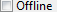

Confirmation Page


Confirmation Page |
|
The primary purpose of the confirmation page is to review the gathered task list
with the opportunity to selectively enable specific tasks.
The page has the following controls:
 |
Displays the tasks to be performed. The root object shows the trigger that started the wizard. The check boxes allow tasks to be selectively chosen for execution. Double clicking a task will enable that task and disable all other tasks. The view can either show all tasks, including the ones that don't need to perform, or only the tasks that need to be performed. Tasks that don't need to perform are shown grayed out. Selecting a task will display its contained children in the nested elements viewer and will display its properties in the properties viewer. |
 |
Displays the nested children of the selected task in the tasks viewer. Selecting a child will display its properties in the properties viewer. |
| Displays the properties of the selected task or the selected nested element of the selected task. | |
| Determines whether to show all tasks or only the tasks that need to perform. | |
|  | Determines whether the installation and provisioning process will, as much as possible, proceed using locally cached resources rather than using internet access to get the latest information. |
| Determines whether p2 mirrors will be used during installation and provisioning, rather than just the primary internet host. This setting is particularly relevant for p2 and targlet tasks which make heavy use of p2 update sites. | |
| Determines whether to ovewrite an existing installation. This is displayed only in the installer wizard when it detects an attempt to install into a location where an installation already exists. In this case, the title area will display an error message, and it's only possible to proceed if one elects to reinstall, i.e., to overwrite an existing installation. |